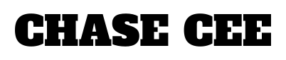
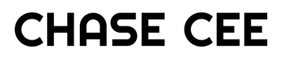

Chase Cee Logo Morph
Hover the outlined stage. Its footprint remains fixed while the letterforms morph.
Anton
Bebas Neue
Alfa Slab One

Righteous

Hover the outlined stage. Its footprint remains fixed while the letterforms morph.

